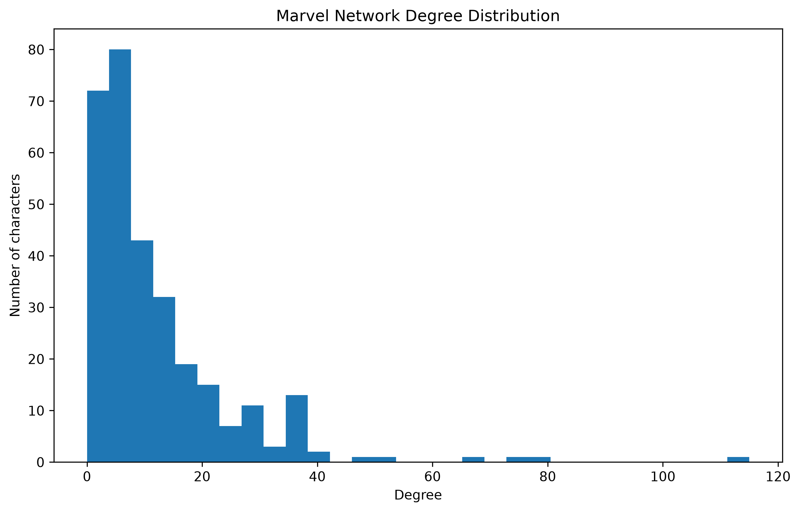
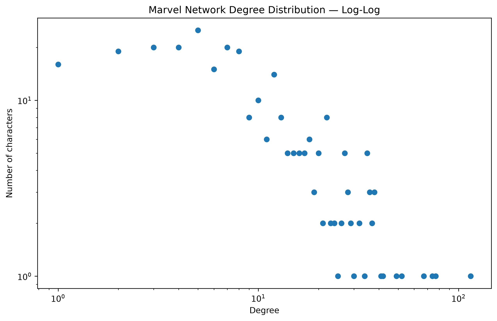

1. Introduction
In Week 1, we explore the network structure of Marvel Comics characters using social network analysis and graph theory.
The network is constructed from connections between Marvel character Wikipedia pages. We use Python and NetworkX to investigate the structure of the network.
2. Dataset
Our dataset contains Marvel Comics characters and links between their Wikipedia pages.
The analysis was performed using Python, Pandas, NumPy, Matplotlib and NetworkX.
The final network contains 303 characters and 1,784 directed connections.
3. Basic Network Statistics
Number of nodes: 303
Number of edges: 1,784
Network density: 0.0195
Average degree: 11.78
Isolated characters: 17
The network is relatively sparse, with a density of approximately 1.95%. On average, each character has around 12 connections.
4. Most Connected Characters
We calculated the in-degree, out-degree and total degree of every character in the network.
The ten characters with the highest total degree are shown below:
| Rank | Character | In-degree | Out-degree | Total degree |
|---|---|---|---|---|
| 1 | Spider-Man | 106 | 9 | 115 |
| 2 | Wolverine | 60 | 17 | 77 |
| 3 | Hulk | 64 | 10 | 74 |
| 4 | Doctor Strange | 50 | 17 | 67 |
| 5 | Deadpool | 33 | 19 | 52 |
| 6 | She-Hulk | 29 | 20 | 49 |
| 7 | Scarlet Witch | 28 | 14 | 42 |
| 8 | Phoenix | 24 | 17 | 41 |
| 9 | Emma Frost | 21 | 17 | 38 |
| 10 | Black Panther | 27 | 11 | 38 |
Spider-Man has the highest total degree in the network, with 115 connections. This makes him the most connected character in our dataset.
5. Degree Distribution
The degree distribution shows how many characters have different numbers of connections.

The distribution shows that most characters have relatively few connections, while a small number of characters have very high degree.
6. Network Structure
We examined the weakly connected components of the directed Marvel network.
Number of connected components: 19
Giant component size: 277 characters
Percentage of characters in giant component: 91.42%
Most of the characters belong to one large connected component. This means that the majority of characters are connected to each other through the network, while a small number belong to smaller components or are isolated.
The giant component contains more than 91% of all characters in the dataset, showing that the Marvel network is highly interconnected.
7. Spider-Man Analysis
We investigated Spider-Man as an example of a highly connected character.
In-degree: 106
Out-degree: 9
Total degree: 115
Spider-Man has the highest total degree of all characters in the network. His high in-degree indicates that many other character pages contain links pointing toward Spider-Man's page.
8. Network Robustness
To investigate the importance of Spider-Man, we removed the Spider-Man node and compared the giant component before and after removal.
Original giant component: 277 characters
Giant component without Spider-Man: 271 characters
Change: -6 characters
Although Spider-Man is the most connected character, removing him only reduces the giant component from 277 to 271 characters.
This suggests that the network is relatively robust to the removal of Spider-Man. Other connections between characters allow most of the network to remain connected.
9. Log-Log Degree Distribution
A log-log visualization was also created to investigate the distribution of connections across the network.

The log-log representation provides another way to examine the distribution of degree values and helps highlight characters with unusually high numbers of connections.
10. Reflection
The Week 1 analysis demonstrates how network science can be used to investigate the structure of a fictional social network.
The network contains 303 characters and 1,784 connections. Spider-Man is the most connected character, with a total degree of 115.
The network is also highly connected at the component level, with 91.42% of all characters belonging to the giant component.
The robustness experiment showed that removing Spider-Man reduces the giant component by only six characters. Therefore, Spider-Man is highly connected but is not essential for keeping the majority of the network connected.
Overall, this analysis shows how graph statistics can reveal important structural properties of the Marvel character network.